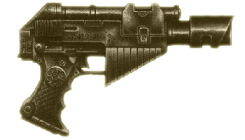

| |
A 40. Évezred
fegyverei
Nagy gondban lenne
az, aki arra adná a fejét, hogy leírást készít
a galaxisban fellelhetõ összes kézifegyverrõl,
így nekem ez nem is volt szándékomban. Ehelyett
igyekeztem összegyûjteni a legismertebb,
legelterjedtebb fegyvereket, vagy éppen ellenkezõleg
a legegzotikusabbakat, és egy rövid leírás
erejéig bemutatni õket. Természetesen a lista
nem teljes, soha nem is lehet az, de ettõl
függetlenül remélem, hogy mindenki számára
kellemes olvasmánynak bizonyul majd!
Lánckard
A lánckard (és egyéb variánsai,
például bárd, vagy tõr) egy hangos, láncfûrész
éllel felszerelt közelharci fegyver, melynek motorja
folyamatosan mozgásban tartja az él mentén található
fogakat, akárcsak egy láncfûrész. A pengeéles,
fogazott él szub-atomi szinten élezett
adamantiumból készül, és képes arra, hogy akár
a plasztacélt is átvágja. Az ûrgárdista közelharci
egységek által gyakran használt, köznapi
emberek számára azonban rendkívül drága és
nagy presztízzsel bíró fegyver ez.
Erõ fegyverek
Az erõfegyverek, habár úgy néznek ki,
mint bármely más közelharci fegyver a galaxisban,
azonban a látszat csal, és egy technikailag
nagyon fejlett és általában rendkívül halálos
fegyvert takar. A fegyver pengéjébe és markolatába
épített energia telepek, egy generátort táplálnak,
amely ellátja a penge felületét egy kéken lüktetõ
energiamezõvel. Amikor használója lesújt a fegyverrel,
a pengén lévõ energiamezõ valósággal széttépi
az ellenfelet. Számos vállfaja létezik a kardtól
kezdve a bárdig. Legritkább és leghalálosabb
fajtája az Energiaököl.
Lézerfegyverek
A lézer technológia rendkívül megbízható
és könnyen gyártható fegyvereket eredményez.
Habár nem ezek a leghatékonyabb lõfegyverek a
galaxisban, ám kétségkívül a legmegbízhatóbbak,
még rendkívüli körülmények között is.
Egyetlen energiacellával számos lövés adható
le, kimerülés után pedig könnyedén kicserélhetõ
vagy újratölthetõ egy standard generátor vagy
akár egyszerû nap illetve hõenergia segítségével
is.
Számos harcos a galaxisban, elõnyben részesíti
a lézerfegyve- reket más hatékonyabb gyilkoló-szerszámokkal
szemben, egyszerûen megbízhatósága miatt. A
Birodalmi Gárda számos alakulatának
alapfelszerelése a lézerpuska.

Tûpisztoly
A tûpisztoly vagy tûvetõ egy rendkívül
komplex, lézertechnológiát használó kézifegyver.
A kilõtt lézernyaláb egy apró tût vagy más
szilárd lövedéket
tartalmaz, amely rendkívüli erõvel csapódik az
áldozat húsába és fecskendezi be a gyomrában
található halálos toxinokat. A lövedéket továbbító
lézernyaláb gyakran üt réseket vagy olvasztja
meg a páncélt, és a ruhát, ezzel segítve elõ
a lövedék mélyebbre hatolását. Legnagyobb elõnye,
hogy rendkívül csendes, így közkedvelt
fegyvere a Birodalmi Orvgyilkosoknak, és mindenki
másnak, aki szeretné elkerülni a feltûnést.
Ez egy rendkívül ritka technológia, és egyszerû
emberek számára egy ilyen fegyver beszerzése nehézségekbe ütközhet.
Plazmafegyverek
A plazmafegyverek egy fényes plazmalövedéket
lõnek ki, amely gyakorlatilag egy szuper-forró
energia tömeg. Amikor az izzó lövedék eléri
az áldozatot, egy óriási energia-kitörés következik
be, amely valósággal szétszaggatja a célpontot. A
plazmafegyverek rendkívül hatékonyak és nagyon
veszélyesek. Legnagyobb hátrányuk azonban, hogy
sok idõ kell, amíg a cellák újratöltenek
minden egyes lövés után. A lövész ugyan lerövidítheti
az újratöltési idõt azzal, hogy kisebb lövedékeket
bocsát útjukra, ám ez jelentõsen csökkenti a
lövedékek erejét és a fegyver hatékonyságát
is.
Hálópisztoly
A hálófegyver vagy más néven ragasztópisztoly
egy igen ritka fegyver. Tömeglázadások alkalmával
vagy olyankor használják, amikor nem a célpont
megsemmisítése a cél. Lövedéke vékony, ragadós
szálak tömkelege, mely megtapad az áldozaton,
és valósággal beborítja azt. A ragadós szálak
rövid idõn belül zsugorodásnak indulnak és
egy kemény, összeálló réteget képeznek, amely a legkisebb
mozgást sem engedélyezi áldozatának. Ha
azonban az áldozat túl sokat mozog, a zsugorodó
háló akár komolyabb sérüléseket is okozhat.
Maga a pisztoly rendkívül ormótlan, egy tölcsérszerû
fúvókával a végén, és egy jól elkülöníthetõ
tartállyal, amely a hálóhoz szükséges kémiai
összetevõket tartalmazza. A fegyver és a lövedéket
képezõ anyag meglehetõsen ritka, így nem lehet
túl sokat látni ebbõl a fegyverbõl.
Automatafegyverek
Az automata fegyverek szilárd lövedékeket
képesek rendkívül gyorsan és hatékonyan az ellenfél felé okádni,
elõállításuk egyszerû és emellett még megbízhatóak
is. E tulajdonságai miatt az egyik
legelterjedtebb fegyver-típus a galaxisban, számos
a Birodalmi Gárdához tartozó egység
alapfelszerelése. Noha maga a fegyver meglehetõsen
durvának számít, ez mit sem csökkent hatékonyságán.
Egyetlen hátrányuk, hogy nagy tûzgyorsaságuk következtében
a kézi változatok, legtöbbször csak rövidtávon
pontosak.
Sorozatvetõ
A sorozatvetõ az ûrgárdisták, az Impérium
legkiválóbb harcosainak, standard kézifegyvere.
Csak nagyon csekély mennyiségben gyártják, a
fellelhetõ legjobb minõségû alapanyagokból.
Emellett állandó odafigyelést és karbantartása
megfelelõ szakértelmet kíván, ennek megfelelõen
elég ritka látvány. Lövedékük nem szabványos, egy saját
hajtómûvel rendelkezõ, rendkívüli rombolóerõt
képviselõ páncéltörõ lövedék, mely kilövéskor
nagy robajjal hagyja el a fegyver csövét. Már
maga a lövedék elõállítása is nehezen
kivitelezhetõ, ezért csak nagyon ritka
alkalmakkor látható egyszerû harcosok kezében.
Mindezek ellenére egyike a legkeresettebb
fegyvereknek, köszönhetõen rendkívüli rombolóerejének.
Az a harcos, aki ilyen fegyvert hordoz biztos,
hogy rendkívül nagy tekintéllyel vagy sok pénzzel
rendelkezik.
Lángszóró
A lángszóró egy izzó kémiai anyagot magából
kiokádó
kézifegyver. A lövedék a kilövést követõen
a levegõvel érintkezve begyullad, majd rátapadva
célpontjára valósággal szénné égeti azt. Könnyedén
felismerhetõ az üzemanyagot tartalmazó tartályokról,
melyek legtöbbször a fegyver alsó részén találhatók.
Egyik nagy hátrányuk, hogy a kézi változatok
kapacitása nem túl nagy, így néhány hosszabb
sorozat után hamar kifogy belõlük az üzemanyag.
Rövidtávon azonban szinte lehetetlen eltéveszteni
a célt, aki hamar a lángok martaléka lesz.
Gránátvetõ
A gránátvetõ egy masszív kézifegyver,
amely alkalmas arra, hogy a sûrített levegõvel
töltött gránátok szinte összes fajtáját az
ellenségre lõje. Leggyakrabban mégis egyszerû
robbanó és repeszgránátok kilövésére használják.
Maga a fegyver rendkívül robosztus, ám egyszerûen
kezelhetõ. A kilövéshez szükséges sûrített
levegõt, egy belsõ, tartályból nyeri, melynek
újratöltése bármely külsõ egység rákötésével
könnyedén elintézhetõ.

Melta-fegyver
A Melta-fegyver, más néven olvasztó, sütögetõ
vagy gõzölõ, egy szub-molekuláris hõ-nyalábot
kibocsátó puska, amely szó szerint megsüti
a célpontját, nem ritkán egyszerûen elpárologtatva
azt. Lövedéke oly nagy hõfokon ég, hogy képes
megolvasztani a plasztacélt, az élõ szervezetre
tett hatása pedig elkerülhetetlenül halálos. Tüzeléskor
a fegyver nem ad ki hangot. A légkört átszelõ
hõhullám azonban felmelegíti a levegõt maga körül,
ezzel egy jellegzetes sziszegõ hangot okozva,
mely rövidesen egy üvöltõ robbanásban csúcsosodik
ki, ahogyan az élõ húsba csapódik, a
testnedvek hirtelen gyorsasággal történõ elpárolgását
okozva.
Fordította: Rince
(A fordítás számos Warhammer
40.000 szabály- és seregkönyv alapján készült.)
|
|